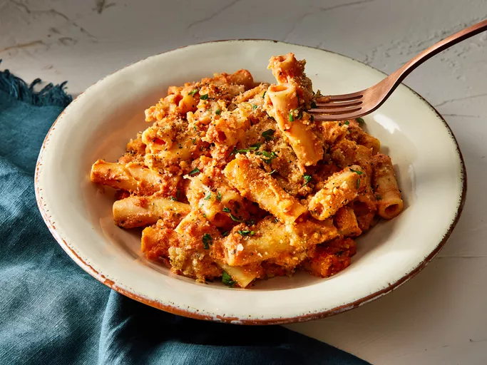

Five Cheese Ziti al Forno

Description
Five cheese ziti al forno is a delicious pasta bake made with ready-made marinara and alfredo sauces, Italian cheese blend, ricotta, ziti, and topped with panko bread crumbs and Parmesan.
Ingredients
- Pasta: This recipe starts with a pound of dry ziti pasta.
- Cheeses: It should come as no surprise that you'll need plenty of cheeses for this dish: A package of shredded Italian blend cheeses, a cup of ricotta, and grated Parmesan.
- Jarred sauce: Using jarred sauce cuts down on time — but, of course, you can make your own marinara and Alfredo sauces!
- Bread crumbs: Use store-bought or homemade seasoned bread crumbs.
- Butter: You'll need two tablespoons of melted butter for the rich topping.
- Garlic: Flavor the buttery bread crumb topping with fresh garlic.
Steps
- Cook and drain the pasta.
- Toss the pasta with the sauces, half of the Italian blend cheeses, and ricotta.
- Transfer the mixture to the prepared dish and top with remaining cheese.
- Make the topping and sprinkle it over the pasta.
- Bake the five cheese ziti al forno until bubbly and golden.